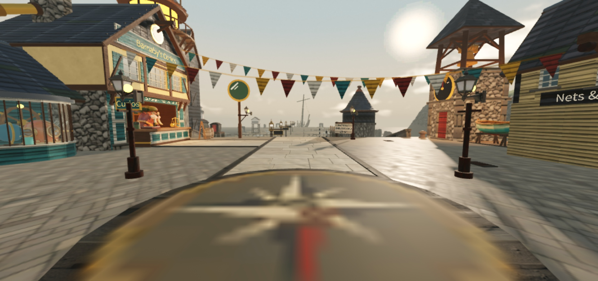
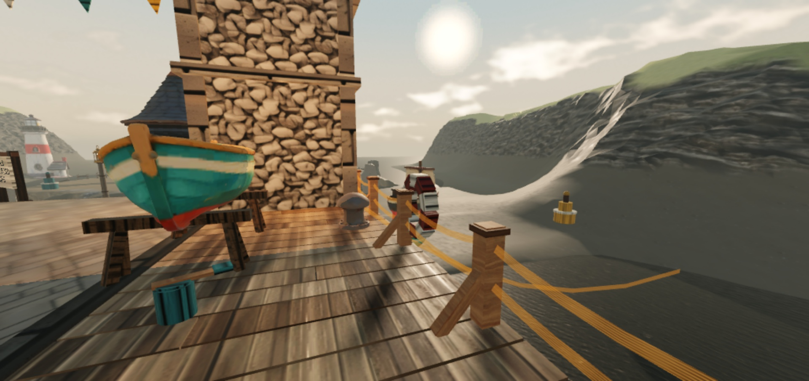

Share the same clock
A synchronized six-and-a-half-minute tide changes access to the flats. The bell warns players that the return route is about to close.
04 / Last Tide ROBLOX · PROTOTYPE
A cooperative Roblox treasure-hauling prototype: explore the flats, carry finds together, and race the rising water back to the harbor.

01 / Idea
Last Tide is a cooperative Roblox prototype about hauling curios home before a shared tide closes the route. The harbor is a safe place to bank a haul; the flats invite players to push a little farther.
The design centers on a small decision: head back with what you have, or make time for one more find.
02 / Game loop
A synchronized six-and-a-half-minute tide changes access to the flats. The bell warns players that the return route is about to close.
Small finds fit in a bag. Bulky and huge finds slow the trip and give players a reason to lift together.
Bank finds at Barnaby’s counter. If the tide catches a haul, wash-up recovery creates a reason to go back out.
03 / World
The art pass adds a harbor, tidal flats, a bell tower, weather, and layered water. The game’s landmarks support the same loop: leave the safe harbor, judge the water, and find the way back.


04 / Current build
Built in Roblox Studio with Luau and Rojo. Type checks, lint, formatting, and sixteen unit specifications passed on November 12, 2026, including randomized ledger checks. A current single-player Studio run also started successfully with its tide, finds, and HUD after syncing the missing saved-place scripts.
This is a local, unpublished experience. Player progress is currently stored in memory; two real clients, real phone input, and a published server remain validation steps. The GitHub showcase documents the current scope and screenshots.
NEXT PROJECT